Our Photo Gallery
Enjoy some wonderful pictures from the
world of Tom and Jerry!
Our characters
 Tom – The playful cat
Tom – The playful cat
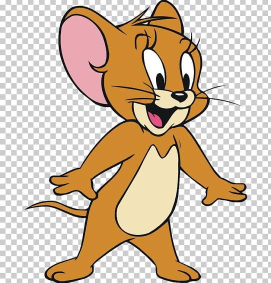
Jerry – The clever little mouse
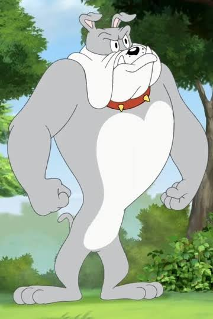
Spike – The strong and protective bulldog
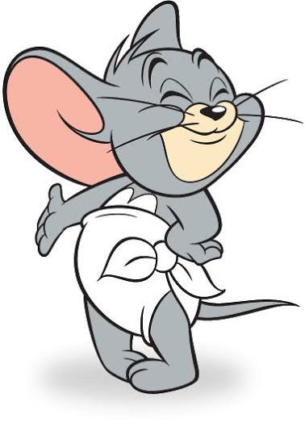
Tuffy – The adorable little mouse
 Tyke – Spike's adorable puppy
Tyke – Spike's adorable puppy
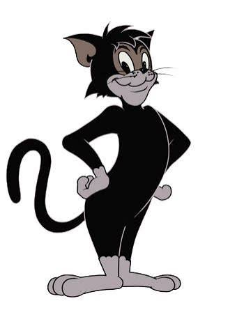
Butch – Tom's rival
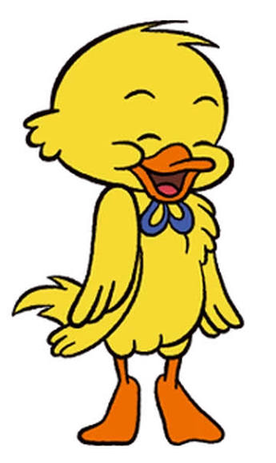
Quacker – The cheerful duckling
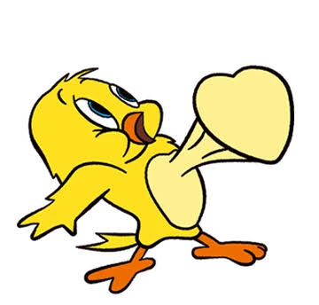
Cuckoo – The little yellow bird
 Toodles Galore – The elegant cat
Toodles Galore – The elegant cat
 Mammy Two Shoes – The housekeeper
Mammy Two Shoes – The housekeeper
Funny Moments
Enjoy the funniest and most entertaining moments
from the world of Tom and Jerry!
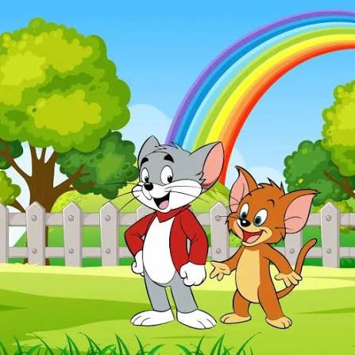
Funny Moment 1
 Funny Moment 2
Funny Moment 2
 Funny Moment 3
Funny Moment 3
 Funny Moment 4
Funny Moment 4
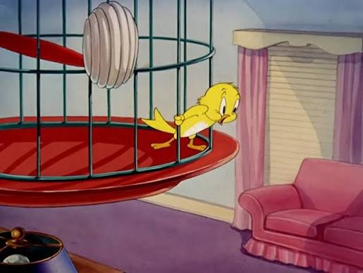
Funny Moment 5
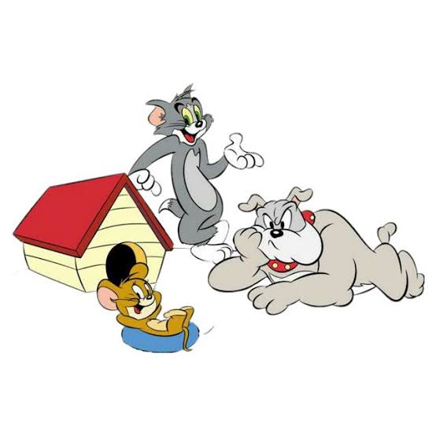
Funny Moment 6
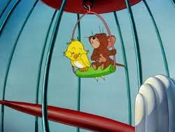
Gerry With Cuckoo
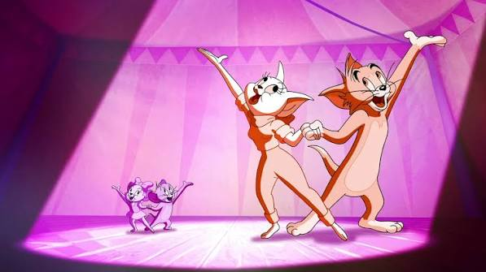
Tom with Toodles Galore
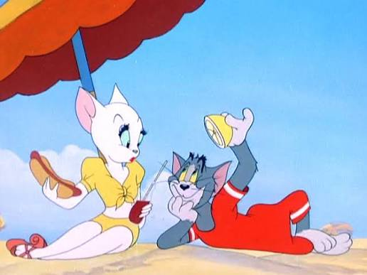
With love TOM and TOODLES
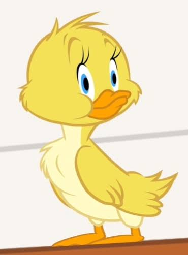
Quacker